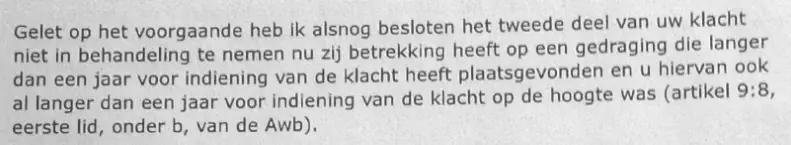

Bewijsstuk · Brief
Ministerie van Binnenlandse Zaken aan Giltay, 17 april 2015
De passage
“Gelet op het voorgaande heb ik alsnog besloten het tweede deel van uw klacht niet in behandeling te nemen nu zij betrekking heeft op een gedraging die langer dan een jaar voor indiening van de klacht heeft plaatsgevonden en u hiervan ook al langer dan een jaar voor indiening van de klacht op de hoogte was (artikel 9:8, eerste lid, onder b, van de Awb).” Pagina 2, de alinea waarin het besluit wordt genomen.

Waarom dit document telt
In deze brief van 17 april 2015 neemt de minister van Binnenlandse Zaken het advies over van de CTIVD, de Commissie van Toezicht betreffende de Inlichtingen- en Veiligheidsdiensten. Hij verklaart het eerste deel van de klacht ongegrond: Giltays vermoeden dat de AIVD zijn correspondentie met advocaat Britta Böhler over het manuscript had onderschept. Het tweede deel, over de in De doofpotgeneraal beschreven affaire, neemt de minister niet in behandeling, omdat de gedraging waarover Giltay klaagde meer dan een jaar vóór de klacht had plaatsgevonden. Over de affaire zelf geeft het ministerie dus geen oordeel. Het essay stelt dat minister Ronald Plasterk, na te hebben geweigerd inhoudelijk op het manuscript te reageren, toch de klacht van de auteur over de AIVD liet onderzoeken door de CTIVD, en het onderzoek zesenveertig dagen later, met deze brief, weer introk. Toen Defensie in juni 2017 zijn weigering om de gekverklaring in te trekken motiveerde, beriep het zich op een CTIVD-onderzoek dat Giltays klachten over de MIVD zou hebben betroffen. Deze brief laat zien dat de CTIVD in 2015 alleen een klacht over de AIVD heeft onderzocht.
Herkomst
- Document
- Brief, 2 pagina’s, op briefpapier van het Ministerie van Binnenlandse Zaken en Koninkrijksrelaties
- Van
- Ministerie van Binnenlandse Zaken en Koninkrijksrelaties, Den Haag. Voor de minister ondertekend door de secretaris-generaal, Richard van Zwol; de handtekening zelf is op de scan zwartgelakt
- Aan
- E. Giltay
- Datum
- 17 april 2015
- Kenmerk
- 85978181-or1-2.0
- Onderwerp
- “Uw klacht over de AIVD”
- Verwijzingen
- Giltays e-mail van 1 februari 2015 en zijn brief van 11 februari 2015; het advies van de Commissie van Toezicht betreffende de Inlichtingen- en Veiligheidsdiensten (CTIVD) van 27 maart 2015; artikel 9:8, eerste lid, onder b, van de Algemene wet bestuursrecht (Awb); de Wet op de inlichtingen- en veiligheidsdiensten 2002 (Wiv 2002)
- Bijlage
- 1, volgens de brief het CTIVD-advies van 27 maart 2015. Dat advies maakt geen deel uit van deze pdf, die alleen de twee pagina’s van de brief bevat
- Afschrift aan
- De CTIVD, zoals de slotalinea vermeldt
- Taal
- Nederlands
- Pagina’s
- 2, genummerd 1 van 2 en 2 van 2
- Bron
- Scan op dedoofpotgeneraal.
nl/ doc/ minBZK-2.pdf - Zie ook
- Ministerie van Binnenlandse Zaken aan Giltay, 5 februari 2015Ministerie van Binnenlandse Zaken aan Giltay, 2 maart 2015Ministerie van Defensie aan Giltay, 6 juni 2017
Aangehaald in: het essay ‘Het verbod viel, het boek bleef overeind’ in het hoofdstuk (6) ‘Drie affaires’.
Bewijsstukpagina: https://
Document: https://
Laatst gewijzigd 13 september 2026, geraadpleegd 3 oktober 2026.

Deze pagina is een bewijsstuk bij het boek De doofpotgeneraal van Edwin Giltay en de bijbehorende website.